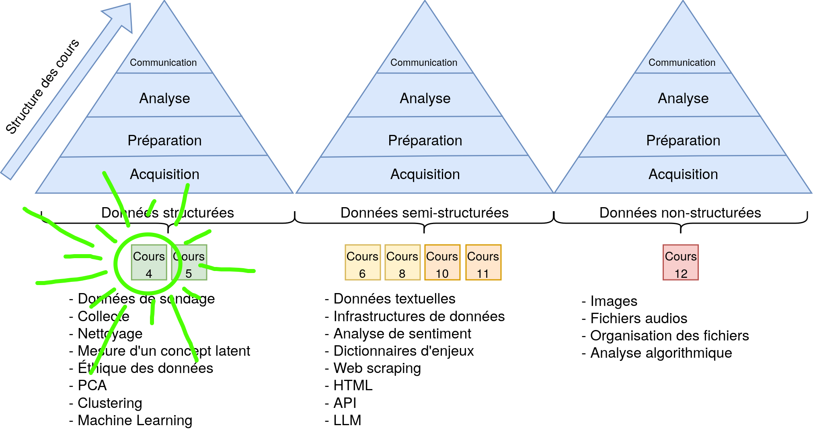
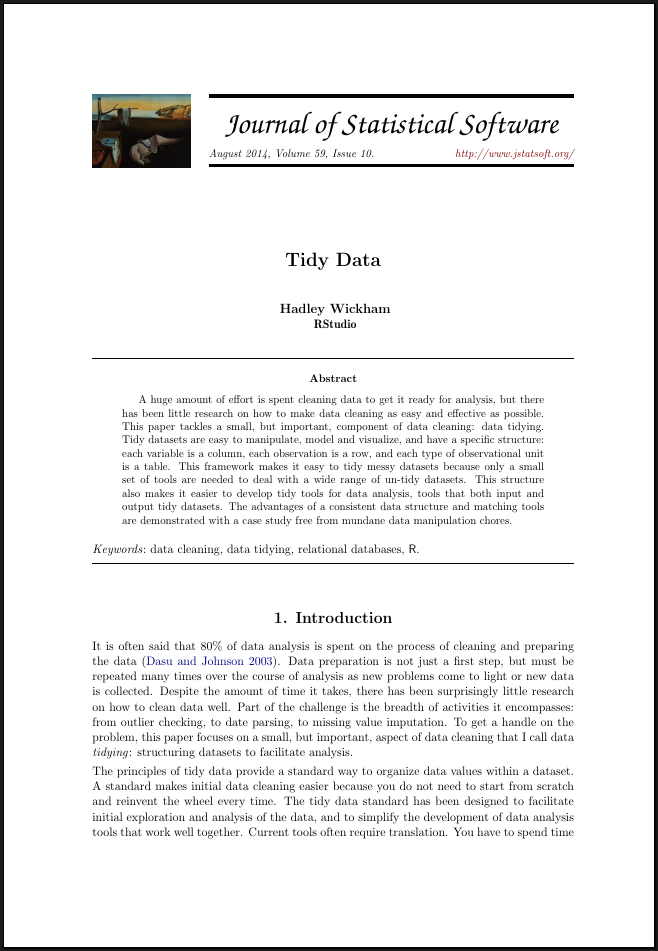
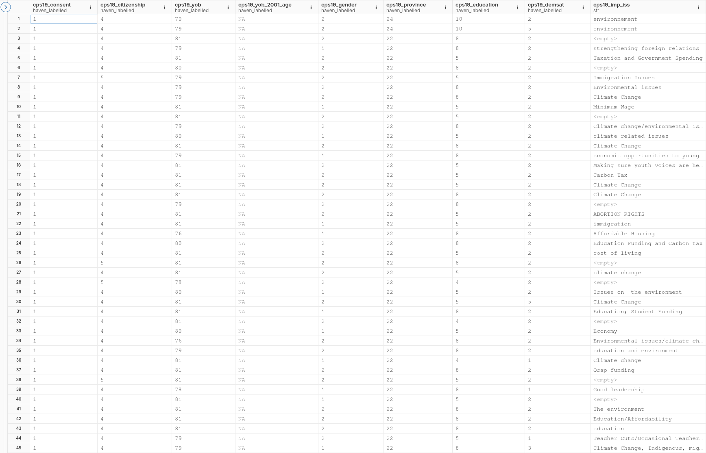
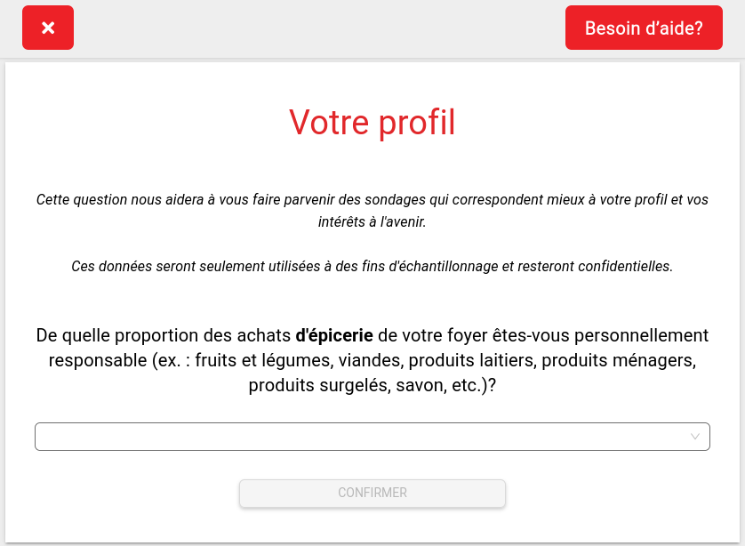
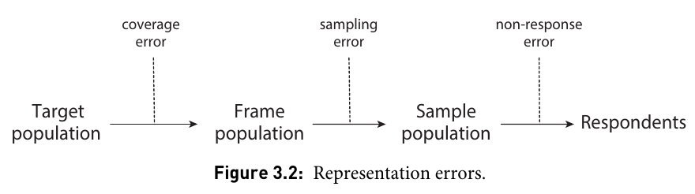
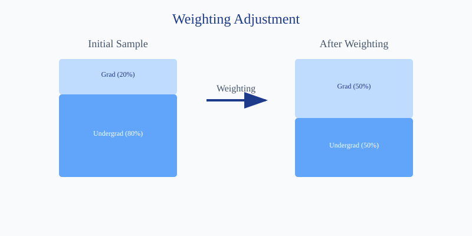
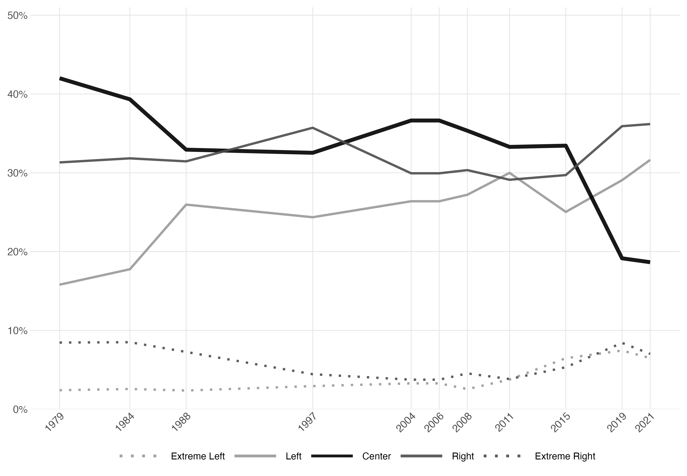
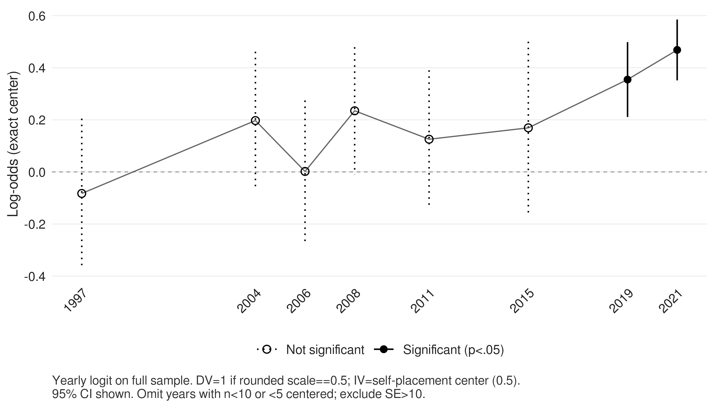

Surveys
Introduction to Big Data in the Social Sciences
Université de Montréal
Feedback on Assignment 1
Questions
- What was the most difficult part?
- How many hours did it take you?
- Why do we put
../in the chart path in Quarto but not in R? - What is a package?
- Why wouldn’t Quarto compile?
- LaTeX packages vs. R packages?
Tips
- Rerun the code when it doesn’t work
- Use the trash icon in Positron to reset the environment
This is not a git repository- USE AI TO UNDERSTAND ERROR MESSAGES!
A bit more R?
Course Structure


Course Outline
- Introduction
- Tidy data
- Surveys
- How to collect survey data?
- How to clean survey data?
Our Goal


Tidy Data

Like families, tidy datasets are all alike but every messy dataset is messy in its own way.
Using the “tidy” format is like taking the path of least resistance for data analysis.
Why “Tidy” Data?
“80% of data analysis time is spent cleaning and preparing data”
- Facilitates manipulation
- Simplifies visualization
- Standardizes analysis
The 3 Rules of Tidy Data
| Rule | Description |
|---|---|
| 1 | Each column is a variable |
| 2 | Each row is an observation |
| 3 | Each table is an observed observational unit type |
Canadian Election Study 2019

The 5 Common Problems
- Column headers are values
- Multiple variables in a single column
- Variables stored in both rows and columns
- Multiple types of observations in one table
- The same observation across multiple tables
1. Headers are values
❌ Religion and income data
| religion | <$10k | $10-20k | $20-30k |
|---|---|---|---|
| Agnostic | 27 | 34 | 60 |
| Atheist | 12 | 27 | 37 |
| Buddhist | 27 | 21 | 30 |
1. Headers are values
1. Headers are values
✅ Religion and income data
| religion | revenu | freq |
|---|---|---|
| Agnostic | <$10k | 27 |
| Agnostic | $10-20k | 34 |
| Agnostic | $20-30k | 60 |
| Atheist | <$10k | 12 |
| Atheist | $10-20k | 27 |
2. Multiple variables in a single column
❌ Tuberculosis data
| country | year | m014 | m1524 | m2534 | m3544 |
|---|---|---|---|---|---|
| AD | 2000 | 0 | 0 | 1 | 0 |
| AE | 2000 | 2 | 4 | 4 | 6 |
| AF | 2000 | 52 | 228 | 183 | 149 |
2. Multiple variables in a single column
2. Multiple variables in a single column
✅ Tuberculosis data
| country | year | sex | age_group | cases |
|---|---|---|---|---|
| AD | 2000 | m | 0-14 | 0 |
| AD | 2000 | m | 15-24 | 0 |
| AD | 2000 | m | 25-34 | 1 |
| AD | 2000 | m | 35-44 | 0 |
| AE | 2000 | m | 0-14 | 2 |
3. Variables stored in both rows and columns
❌ Temperature data in Mexico
| id | element | d1 | d2 | d3 | d4 |
|---|---|---|---|---|---|
| MX17004 | tmax | NA | 27.3 | 24.1 | NA |
| MX17004 | tmin | NA | 14.4 | 14.4 | NA |
3. Variables stored in both rows and columns
3. Variables stored in both rows and columns
✅ Temperature data in Mexico
| id | date | measure | value |
|---|---|---|---|
| MX17004 | d1 | tmax | NA |
| MX17004 | d1 | tmin | NA |
| MX17004 | d2 | tmax | 27.3 |
| MX17004 | d2 | tmin | 14.4 |
| MX17004 | d3 | tmax | 24.1 |
4. Multiple types of observations
❌ Billboard song and ranking data
| song | artist | duration | rank_week1 | rank_week2 |
|---|---|---|---|---|
| Baby Don’t | 2Pac | 4:22 | 87 | 82 |
| Try Again | Aaliyah | 4:03 | 84 | 62 |
4. Multiple types of observations
# Creating the two tables
# Table 1: Song Info
songs <- df %>%
select(song, artist, duration) %>%
mutate(song_id = row_number())
# Table 2: Rankings
rankings <- df %>%
mutate(song_id = row_number()) %>%
pivot_longer(
cols = starts_with("rank_"),
names_to = "week",
values_to = "rank",
names_prefix = "rank_week"
)4. Multiple types of observations
✅ Billboard song data
| song_id | song | artist | duration |
|---|---|---|---|
| 1 | Baby Don’t | 2Pac | 4:22 |
| 2 | Try Again | Aaliyah | 4:03 |
✅ Billboard ranking data
| song_id | week | rank |
|---|---|---|
| 1 | 1 | 87 |
| 1 | 2 | 82 |
| 2 | 1 | 84 |
| 2 | 2 | 62 |
5. One observation across multiple tables
❌ Medical data
Table 1 - Patient Info:
| patient_id | name | age |
|---|---|---|
| 1 | Alice | 32 |
| 2 | Bob | 45 |
Table 2 - Measurements:
| patient_id | pressure | glucose |
|---|---|---|
| 1 | 120/80 | 95 |
| 2 | 130/85 | 105 |
5. One observation across multiple tables
5. One observation across multiple tables
✅ Medical data
| patient_id | name | age | measure | value |
|---|---|---|---|---|
| 1 | Alice | 32 | pressure | 120/80 |
| 1 | Alice | 32 | glucose | 95 |
| 2 | Bob | 45 | pressure | 130/85 |
| 2 | Bob | 45 | glucose | 105 |
Advantages of Tidy Data
- Facilitates the use of analysis tools
- Standardizes data structure
- Simplifies visualization
- Makes code more readable
In Summary
- Consistent structure
- One observation = one row
- One variable = one column
- One type of observation = one table
Surveys
Observing vs. Asking
- Observing: Watching what people do.
- Social media data
- Mobility/location data
- Asking: Asking people questions.
- Surveys
- Interviews
Wave 1: Face-to-Face (1930-1950)
The Craft Approach
- Sampling: Probability sampling by geographic area (cutting up a map).
- Collection: An interviewer knocks on the door.
- Context: Surveys are a rare event.
- Advantage: Very high response rate (hard to say no in person).
- Disadvantage: Extremely expensive and slow.

Wave 2: The Telephone Era (1950-1990)
Industrialization (The Golden Age)
- Innovation: Random Digit Dialing (RDD).
- Collection: Centralized in call centers.
- Context: Almost everyone has a landline.
- Advantage: Fast, standardized, anonymous.
- Disadvantage: Starts to decline as people screen calls.

Wave 3: The Digital Era (1990-2010)
Democratization
- Shift: Decline of landline phones, rise of the Internet.
- Collection: Web surveys, opt-in panels (volunteers).
- New Challenge: The sample is no longer a simple random sample.
- Solution: Need for complex weighting methods.
- Cost: Drastically reduced.

Now: The Behavioral Era (2010+)
“Dataification”
- Paradigm: We no longer ask questions; we observe.
- Collection: Passive (GPS, clicks, transactions, social networks).
- Risk: Data collected and used without consent.
- Future: Hybridization (Surveys + Digital traces).
Survey Representativeness

A Historic Poll
- Popular magazine Literary Digest
- Successful presidential polls in 1920, 1924, 1928, and 1932
- In 1936, massive poll during the Great Depression:
- 10 million ballots sent out
- 2.4 million responses (240x more than modern polls!)
- Sources: telephone directories and automobile registries
The result?
- Prediction: Alf Landon victory
- Reality: Landslide victory for Roosevelt
The Literary Digest Case
- Population = American voters in 1936
- Accessible population = Car owners and people in the telephone directory
- Sampling method = Massive mailout
- Sampling frame = 10 million people
- Sample = 2.4 million respondents
Representativeness Errors

- People in the Literary Digest’s sampling frame were systematically different from the general population.
- Sampling must be representative of the target population.
- Non-responses must be randomly distributed.
Weighting
What is weighting?
- Assigning more or less “weight” to certain responses to correct for sampling bias
- Goal: Make our sample better represent the actual population
Simple Example: The Campus Cafeteria
Imagine a survey on meal satisfaction:
- 50 undergraduate students respond
- 50 graduate students respond
- BUT in the university population, it’s 70% undergraduates and 30% graduates
Why Weight?
The Representativeness Problem
- Some groups are overrepresented
- Others are underrepresented
- Non-responses are not random
The Cafeteria Example (continued)
- In our survey: 50% undergraduate / 50% graduate
- Reality: 70% undergraduate / 30% graduate
- Solution: Give more weight to undergraduate responses and less to graduate responses
How to Weight?
The Basic Formula
Weight = % in population / % in sampleFor Our Example
- Undergraduates: 70/50 = 1.4
- Graduates: 30/50 = 0.6
In Practice
- Compare our sample to the census
- Calculate weights for each group
- Apply the weights in our analyses
Real Example: Election Poll
The Situation
- Poll of 1,000 people, total population of 1,000,000
- Overrepresentation of 65+ age group
- Underrepresentation of 18-34 age group
The Data
| Age | Poll (%) | Poll (n) | Census (%) | Population (n) | Weight |
|---|---|---|---|---|---|
| 18-34 | 20% | 200 | 30% | 300,000 | 1.5 |
| 35-64 | 45% | 450 | 45% | 450,000 | 1.0 |
| 65+ | 35% | 350 | 25% | 250,000 | 0.71 |
| Total | 100% | 1,000 | 100% | 1,000,000 | - |
Visualizing the Adjustment

How to Use Weights in R?
Example with a Linear Regression
Example with a Chart
Measurement
A Question of Wording…
The first asks:
“Is it permissible to smoke while praying?”
→ No! It is a sin.The second asks:
“Is it permissible to pray while smoking?”
→ Yes! Of course.
Methodological Point
The way a question is worded can drastically influence the response obtained!
The Effect of Question Wording/Order
Version A:
“How much do you agree: Individuals are more to blame than social conditions for crime and lawlessness in this country.”
→ Result: ~60% blame individuals
Version B:
“How much do you agree: Social conditions are more to blame than individuals for crime and lawlessness in this country.”
→ Result: ~60% blame social conditions
Warning
Same question with inverted wording = opposite conclusions!
Best Way to Ask Questions
- Copy questions from previous surveys
How to Collect Survey Data?
- Multiple platforms
- Polling companies.
- Surveys are expensive
Which Survey Platform to Choose?

- The most popular survey platform in academia and the corporate world.
- Integrates with the most popular respondent panels.
- Very expensive. Around $15,000 per year.
- Allows adding quotas and conditional logic.
Other Options?
Cleaning Survey Data
Canadian Election Study 1993
Raw
| CPSIGEN | CPSA3 | CPSG1 | CPSO11 | CPSA2 |
|---|---|---|---|---|
| 5 | 1 | 7 | 1 | 1 |
| 5 | 2 | 5 | 1 | 1 |
| 5 | 99 | 7 | 1 | 1 |
| 1 | 2 | 7 | 1 | 1 |
| 5 | 1 | 3 | 1 | 1 |
| 1 | 2 | 5 | 1 | 1 |
Codebooks
Canadian Election Study 1993
Clean
| ses_gender | ses_born_canada | vote_intention | vote_probability_to_vote | issue_gst_opposed |
|---|---|---|---|---|
| female | 1 | cpc | 1 | 1.00 |
| female | 1 | lpc | 1 | 0.67 |
| female | 1 | NA | 1 | 1.00 |
| male | 1 | lpc | 1 | 1.00 |
| female | 1 | cpc | 1 | 0.33 |
| male | 1 | lpc | 1 | 0.67 |
Deconstructing the Cleaning Process
library(dplyr)
df_raw <- read.csv("data/ces/1993/raw/CES-E-1993_F1_subset.csv")
df_clean <- data.frame(id = 1:nrow(df_raw))
#------------------------------------------------------------------------------#
# VARIABLE : CPSG1 - GST opposition
# Question : In 1991 the Federal government adopted a new tax on goods and
# services, the GST. All things considered, are you VERY MUCH IN FAVOUR,
# SOMEWHAT IN FAVOUR, SOMEWHAT OPPOSED, or VERY MUCH OPPOSED to the GST?
# Coding : 1 = Opposed, 0 = Favour
#------------------------------------------------------------------------------#
table(df_raw$CPSG1, useNA = "ifany")
df_clean$issue_gst_opposed <- NA
df_clean$issue_gst_opposed[df_raw$CPSG1 == 1] <- 0
df_clean$issue_gst_opposed[df_raw$CPSG1 == 3] <- 0.33
df_clean$issue_gst_opposed[df_raw$CPSG1 == 5] <- 0.67
df_clean$issue_gst_opposed[df_raw$CPSG1 == 7] <- 1
table(df_clean$issue_gst_opposed, useNA = "ifany")
write.csv(df_clean, "data/ces/1993/ces93_clean.csv", row.names = FALSE)Anatomy of a Line of Code
1 - New Variable: df_clean$issue_gst_opposed
- Target dataframe:
df_clean - Name of variable created:
issue_gst_opposed
2 - Selection Condition: [df_raw$CPSG1 == 1]
- Source dataframe:
df_raw - Source variable:
CPSG1 - Condition: equal to 1
3 - Assignment: <- 0
- Assignment operator:
<- - New value:
0
In Plain English
“For all observations where
CPSG1equals 1 indf_raw, assign the value 0 to the variableissue_gst_opposedindf_clean”
Advantage of Standardizing the Cleaning Process

Advantage of Standardizing the Cleaning Process
